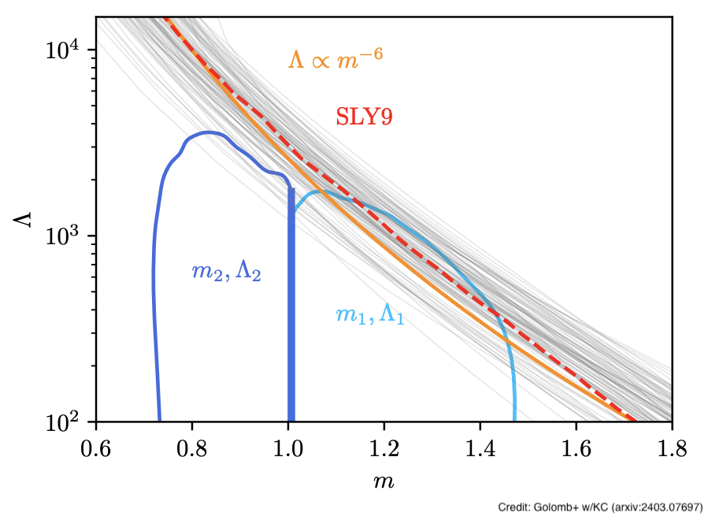

Neutron stars and dense matter

With densities exceeding the nuclear saturation density, neutron stars are the most extreme material objects we know of. The properties and composition of dense nuclear matter inside neutron stars remain elusive. The equation of state of neutron star matter is the subject of both microscopic (nuclear calculations and terrestrial nuclear experiments) and macroscopic (astronomical measurements of neutron star masses, radii, and tidal properties) studies. Gravitational waves offer information about the neutron star internal composition during the late stages of a compact binary coalescence. Before the merger, tidal interactions speed up the inspiral as the binary accelerates toward the collision. After the merger of two neutron stars, the highly deformed merger remnant keeps emitting a strong (yet, still unobserved) signal.
We use gravitational wave data together with electromagnetic data and nuclear theory and experiments to study the properties of dense supranuclear matter and the equation of state of cold matter in beta equilibrium. In a study led by Caltech graduate student Isaac Legred, we used gravitational wave data from GW170817, radio data from J0740, and X-ray data from J0740 and J0030 to place constraints on the neutron star equation of state. The plot shows our inference on the neutron star mass-radius relation. Gravitational wave data provide an upper limit on how big neutron star are and how strong the internal pressure is, while radio and X-ray data provide a lower limit. Our constraints are based on a flexible model for the neutron star equation of state constructed with Gaussian processes. A primary focus of our work is the impact of such equation of state models and ensuring that constraints are guided by data rather than model assumptions.

We are further interested in the astrophysical properties of neutron stars such as their mass and spin distributions as well as their relation to the astrophysical properties of black holes. In a study led by Caltech graduate students Jacob Golomb and Isaac Legred, we considered a potential detection of a subsolar-mass compact binary with LIGO. Low-mass neutron stars are less compact and thus very deformable, making them observationally distinct to black holes. We proposed that the expected large tidal deformation of such low-mass neutron stars will enable us to robustly identify whether subsolar-mass compact binaries are comprised of neutron stars or black holes (of likely primordial origin). The plot compares the expected tidal deformability of neutron stars based on equation of state inference with the measurement obtained from a specific simulated compact binary.